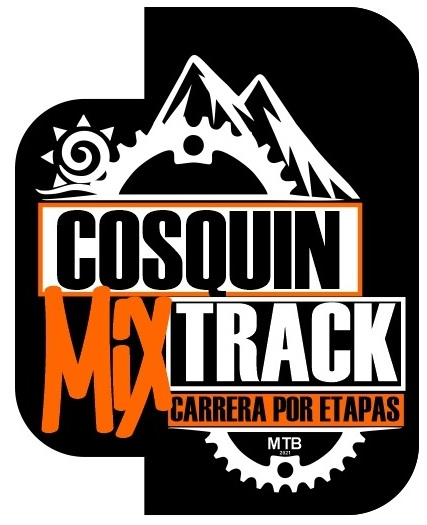
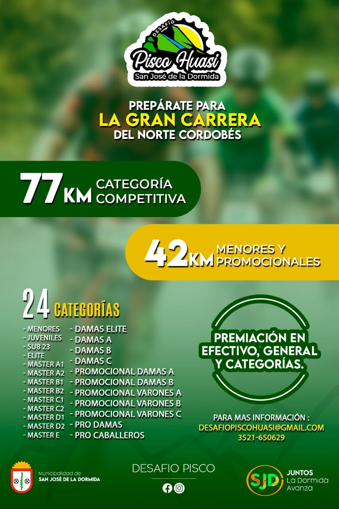

Quilpo Bike Race
10 de abril 2022
Quilpo - Cruz del Eje
Ultra Trail al Áspero
15 y 16 de abril 2022
Cerro Áspero
17º Gran Rural Bike de Los Condores
24 de abril 2022
Juan Llerena - San Luis
Candonga Race
15 de mayo
Candonga

Desafio Carlos Paz
12 de junio 2022
Carlos Paz

Cross Race
12 de junio 2022
Embalse
Cosquín Mix Track
9 y 10 de julio 2022
Cosquín

Vuelta a la Serranita
24 de julio 2022
La Serranita
Desafío Pisco Huasi
21 de agosto 2022
San José de la Dormida

10º Desafío Camino Real
4 de septiembre 2022
Villa del Totoral
La Transcalamuchitana - 100 Millas
17 de septiembmre 2022
Valle de Calamuchita
Senderos del Lago
18 de septiembmre 2022
Villa Rumipal
Trail al Alba
6 de noviembre 2022
La Cruz